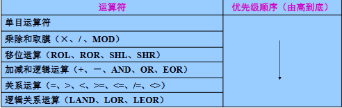

嵌入式程序设计
这一章开始嵌入式程序设计，首先了解伪指令，然后进一步了解汇编的格式，最后应用汇编程序以及汇编语言与C/C++的混合编程
伪指令
伪指令是汇编程序的 “辅助工具”，无对应机器码，仅在汇编阶段生效，核心作用是帮编译器完成程序准备工作。
并且最后由汇编器转为几条具体的 CPU 能识别的二进制码，在运行阶段不可见
伪操作：即伪指令完成的操作
两大分类逻辑，本质是 “按功能” 和 “按适用指令集” 的区别：
| 分类方式 | 具体类别 | 对应典型伪指令 |
|---|---|---|
| 按 “功能” 分类（通用逻辑） | 1. 符号定义伪指令（定义常量 / 变量）2. 数据定义伪指令（分配内存 / 初始化）3. 汇编控制伪指令（控制汇编流程）4. 宏指令（代码复用）5. 其他伪指令（段定义、符号导入导出等） | 1. EQU/GBLA2. DCB/DCD3. IF/WHILE4. MACRO/MEND5. AREA/IMPORT |
| 按 “适用指令集” 分类（ARM/Thumb） | 1. 通用伪指令（所有指令集都能用）2. 与 ARM 指令相关的伪指令（仅 ARM 指令集用）3. 与 Thumb 指令相关的伪指令（仅 Thumb 指令集用） | 1. AREA/END/EQU2. ADR（ARM 版）/LDR（ARM 版）3. ADR（Thumb 版）/NOP（Thumb 版） |
通用伪指令
通用伪指令是 ARM 汇编中所有指令集（ARM/Thumb）都能通用的核心伪指令，也是嵌入式汇编编程的基础。
又分为几类指令
- 符号定义伪指令：给 “变量 / 寄存器组” 起名字
- 数据定义伪指令：给数据 “分配内存 + 初始化”
- 汇编控制伪指令：控制 “汇编过程” 的流程
- 其他常用伪指令：汇编程序的 “基础配置”
符号定义伪指令
用于定义ARM汇编程序中的变量、对变量赋值以及定义寄存器的别名等，即给汇编程序里的 “数据 / 寄存器组” 起好记的名字，并且给数据赋值
定义全局变量：GBLA/GBLL/GBLS
“全局”= 整个汇编程序（不管多少个文件）都能访问，所以在整个程序范围内变量名必须惟一
GBLA/GBLL/GBLS 变量名（A = 数字（默认为0）、L = 逻辑（默认为False）、S = 字符串(默认为空串））GBLA num1 ; 定义全局数字变量num1，初始值0 num1 SETA 0xabcd ; 给num1赋值为十六进制0xabcd（也就是十进制43981） GBLL l2 ; 定义全局逻辑变量l2，初始值F l2 SETL {FALSE} ; 赋值为假（逻辑变量只能存TRUE/TRUE，加{}是格式要求） GBLS str3 ; 定义全局字符串变量str3，初始值空串 str3 SETS "Hello!" ; 赋值为字符串“Hello!”定义局部变量：LCLA/LCLL/LCLS
“局部”= 只在特定范围（比如宏、函数）内有效，出了这个范围就 “消失”，局部变量名只需要在自己的作用范围内唯一
LCLA/LCLL/LCLS 局部变量名（和全局变量的 A/L/S 规则完全一样）MACRO ; 宏开始（相当于定义一个“代码模板”，名字叫TEST） TEST ; 宏名 LCLA num1 ; 宏内定义局部数字变量num1，仅在TEST宏里有效 LCLL l2 ; 宏内定义局部逻辑变量l2 LCLS str3 ; 宏内定义局部字符串变量str3 num1 SETA 0xabcd ; 给局部变量赋值 l2 SETL {FALSE} str3 SETS "Hello!" ... ; 宏内其他代码 MEND ; 宏结束变量赋值：SETA/SETL/SETS
给已经定义好的变量（全局 / 局部都可以）“赋值”
变量名 SETA/SETL/SETS 表达式（必须先定义变量，再赋值，不能反过来）LCLA num1 ; 第一步：先定义局部数字变量num1 num1 SETA 0x1234 ; 第二步：给num1赋值为0x1234（数字） LCLS str3 ; 第一步：定义局部字符串变量str3 str3 SETS "Hello!" ; 第二步：赋值为字符串寄存器列表定义：RLIST
给一组寄存器起一个统一的名字，方便批量操作
名称 RLIST {寄存器列表}，寄存器列表里可以写单个寄存器（R0）、连续寄存器（R0-R3），用逗号分隔不管列表里的顺序如何，都会按寄存器编号从低到高访问
pblock RLIST {R0-R3,R7,R5,R9} ; 给这组寄存器起名为pblock ; 后续用LDM指令批量读取：不用写{R0-R3,R5,R7,R9}，直接写pblock LDMIA SP!, pblock ; 从栈（SP）里批量加载数据到pblock对应的寄存器组
数据定义伪指令
为数据分配存储单元，同时初始化。
- DCB 字节分配
- DCW/DCWU 半字（2字节）分配
- DCD/DCDU 字（4字节）分配
- DCQ/DCQU 8个字节分配
- DCFS/DCFSU 单精度浮点数分配
- DCFD/DCFDU 双精度浮点数分配
- SPACE 分配一块连续的存储单元
- FIELD 定义一个结构化的内存表的数据域
- MAP 定义一个结构化的内存表首地址
“U 后缀”（如 DCWU、DCDU）：“不严格对齐”
基本语法格式：标号 <commond> 表达式
DCB：1 字节 “小文件夹”（存字符 / 0-255 的数字）
分配 1 个字节（8 位）空间，只能存「0~255 的数字」或「字符串（每个字符占 1 字节）」；
标号 DCB 表达式（DCB 可简写为=）；Array1 DCB 1,2,3,4,5 ; 划5个1字节空间，依次存1、2、3、4、5（相当于字节数组） str1 = "Your are welcome!" ; 划一串1字节空间，每个字符占1字节（Y占1字节、o占1字节…）DCW/DCWU：2 字节 “中文件夹”（存半字整数）
分配 2 个字节（16 位）空间，存整数（可正可负）；
标号 DCW/DCWU 表达式；Arrayw1 DCW 0xa, -0xb ; 划2个2字节空间，存10（0xa）、-11（-0xb），地址必为2的倍数 Arrayw2 DCWU 0xc ; 划1个2字节空间，存12，地址可以是任意数（比如0x101）DCD/DCDU：4 字节 “大文件夹”（存字整数 / 地址，最常用）
分配 4 个字节（32 位）空间，ARM 处理器默认 “字对齐”，所以这是嵌入式里最常用的伪指令；
标号 DCD/DCDU 表达式；Arrayd1 DCD 1334,234,345435 ; 划3个4字节空间，存这三个整数 Label DCD str1 ; 划1个4字节空间，存str1的内存地址（比如0x8000100），不是存字符串本身！DCFS/DCFSU：4 字节 “小数文件夹”（单精度浮点数）
分配 4 个字节空间，存单精度浮点数（比如 1.23、600.0）；
标号 DCFS/DCFSU 表达式；Arrayf1 DCFS 6E2, -9E-2 ; 划2个4字节空间，存600.0、-0.09 Arrayf2 DCFSU 1.23,6.8E9 ; 划2个4字节空间，存1.23、6800000000.0（不对齐）DCFD/DCFDU：8 字节 “超大小数文件夹”（双精度浮点数）
分配 8 个字节空间，存双精度浮点数（更高精度的小数）；
标号 DCFD/DCFDU 表达式；Arrayf1 DCFD 6E2 ; 划8字节空间，存600.0（双精度） Arrayf2 DCFD 1.23,1.45 ; 划2个8字节空间，存这两个双精度数DCQ/DCQU：8 字节 “超大整数文件夹”（8 字节整数）
分配 8 个字节空间，存超大整数（超出 4 字节范围的数）；
注意：DCQ不能给字符串分配空间
Arrayd1 DCQ 234234,98765541 ; 划2个8字节空间，存这两个超大整数MAP+FIELD：画 “文件夹布局图”（定义结构体，不分配空间）
- MAP 可简写为
^，FIELD 可简写为#； - MAP：
MAP 表达式 [, 基址寄存器]（首地址 = 表达式 + 基址寄存器，基址寄存器可选）； - FIELD：
标号 FIELD 字节数；
MAP 0xF10000 ; 布局图起点=0xF10000（基址寄存器省略） count FIELD 4 ; count占4字节，位置=0xF10000（起点+0） x FIELD 4 ; x占4字节，位置=0xF10004（起点+4） y FIELD 4 ; y占4字节，位置=0xF10008（起点+8） MAP 0x130, R2 ; 布局图起点=0x130 + R2寄存器的值（比如R2=0x10，起点就是0x140）- MAP 可简写为
SPACE：建 “空文件夹”（分配连续空空间，初始值 0）
分配一段连续字节空间，所有字节初始值都是 0
SPACE 可简写为
%；标号 SPACE 表达式（表达式 = 要分配的字节数）；freespace SPACE 1000 ; 划1000个连续字节空间，全初始化为0（用来预留内存，比如栈空间）
汇编控制伪指令
指引汇编程序的执行流程。
MACRO、MEND、MEXIT：宏定义的开始与结束、从宏中退出。IF、ELSE、ENDIF：根据逻辑表达式的成立与否决定是否在编译时加入某个指令序列。WHILE、WEND：根据逻辑表达式的成立与否决定是否循环执行这个代码段。
宏是提前定义好的可复用代码片段；调用时汇编器会把模板里的代码原封不动 “复制粘贴” 到调用位置，不用重复写相同代码。类比于子程序，宏就是内联函数，而子程序就是普通的函数
| 对比维度 | 宏（MACRO/MEND） | 子程序（BL 调用） |
|---|---|---|
| 执行阶段 | 汇编阶段：直接展开代码（复制粘贴） | 运行阶段：CPU 跳转到子程序地址执行 |
| 开销 | 无额外开销（不用保护现场、不用传参寄存器） | 有开销（BL 指令要保存 LR、子程序要保护 R4-R11） |
| 存储空间 | 调用几次就复制几次代码，占用空间多 | 只存一份代码，调用时跳转，占用空间少 |
| 适用场景 | 代码短、参数多（比如 3-5 行代码，传 4 个以上参数） | 代码长、复用次数多（比如几十行代码，传参少） |
宏（MACRO/MEND/MEXIT）：汇编版 “代码模板”
把一段常用代码 “打包命名”，调用时汇编器会把这段代码原封不动复制粘贴到调用位置
$ label:可选｡在宏指令被展开时,label会被替换成相应的符号,通常是一个标 号｡在一个符号前使用$表示程序被汇编时将使用相应的值来替代$后的符号｡MACRO #宏开始 [$ label] macroname(宏名) { $ parameter1， $ parameter，…… } #参数列表 指令序列 MEND #宏结束 MACRO ; 宏开始 $DATA1 MAX $N1, $N2 ; 宏名MAX，动态标号$DATA1，参数$N1、$N2 ; 以下是宏的核心语句段（示例里的“语句段”） CMP $N1, $N2 ; 比较$N1和$N2（汇编时替换成实际值） MOVGT R0, $N1 ; 若$N1>$N2，R0=$N1 MOVLE R0, $N2 ; 若$N1≤$N2，R0=$N2 MEND ; 宏结束 ; 调用宏： RESULT MAX 10, 20 ; $DATA1=RESULT，$N1=10，$N2=20条件编译（IF/ELSE/ENDIF）：汇编版 “按需编译”
汇编器根据 “逻辑表达式” 的真假，只编译其中一段代码（汇编阶段完成），不是运行时的条件判断！
当逻辑表达式=真时，执行语句段1，否则执行语句段2。ELSE及语句段2可以没有，没有则直接跳过
IF 逻辑表达式 语句段1 ELSE 语句段2 ENDIF IF R0=0x10 ; 汇编器判断：R0是否等于0x10（注意：这里的R0是汇编时的常量，不是运行时寄存器！） ADD R0, R1, R2 ; 真→编译这句，假→跳过 ELSE ADD R0, R1, R3 ; 假→编译这句 ENDIF循环编译（WHILE/WEND）：汇编版 “循环复制代码”
汇编器根据 “逻辑表达式” 的真假，循环复制 “语句段” 到代码里（汇编阶段完成），直到表达式为假，替代重复写多行相同代码。
WHILE 逻辑表达式 语句段 WEND GBLA Cou1 ; 定义全局数字伪变量Cou1（汇编阶段用） Cou1 SETA 1 ; 赋值1（汇编阶段的赋值） WHILE Cou1<10 ; 汇编器判断：Cou1<10？ ADD R1, R2, R3 ; 真→复制这句代码到当前位置 Cou1 SETA Cou1+1 ; 汇编阶段：Cou1加1（更新循环变量） WEND ; 循环结束→回到WHILE重新判断
汇编控制伪指令：
- 都是汇编阶段生效：只影响 “汇编器编译代码” 的过程，不生成运行时的机器码；
- 都是简化代码编写：宏 = 复用代码、IF = 按需编译、WHILE = 循环复制，本质都是减少重复代码；
- 都和 “运行时无关”：不要混淆成 C 的函数 /if/while——C 的是 “运行时执行逻辑”，汇编的是 “编译时处理代码”。
其他伪指令
ALIGN：内存 “对齐器”（避免 CPU 访问内存出错 / 变慢）
通过填充空字节，让当前内存地址满足 “指定的对齐规则”
ALIGN [表达式[,偏移量]]B START ADD R0, R1, R2 DATA1 DCB "abcde" ; 分配5个字节，地址到0x105（假设起始地址0x100） ALIGN 4 ; 填充3个空字节，让下一个地址到0x108（4的倍数） START LDR R5, [R6] ; START的地址=0x108，满足4字节对齐AREA：程序 “分段器”（把代码 / 数据归类）
定义汇编程序的 “段”（代码段 / 数据段）
AREA 段名 属性，……一个程序至少包含一个段，可以有多个数据段，多个代码段。
AREA test, CODE, READONLY ; 定义名为test的代码段，属性只读 AREA data_buf, DATA, READWRITE, ALIGN=8 ; 定义数据段，可读写，8字节对齐CODE16/CODE32：指令集 “标记器”（区分 ARM/Thumb 指令）
告诉汇编器：“后面的代码是 16 位 Thumb 指令（CODE16）/32 位 ARM 指令（CODE32）”，仅标记指令类型，不切换处理器状态。
CODE32 ; 标记后面是32位ARM指令 AREA ||.text||, CODE, READONLY LDR R0, =0x8500+1 ; ARM指令：加载地址到R0 BX R0 ; ARM指令：跳转并切换到Thumb状态（地址最后1位=1触发切换） CODE16 ; 标记后面是16位Thumb指令 ADD R3, R3, 1 ; Thumb指令：R3=R3+1（Thumb指令更精简） ENDENTRY：程序 “入口标记”（告诉编译器从哪开始执行）
指定汇编程序的执行入口
- 整个程序（所有源文件）至少有 1 个 ENTRY；
- 一个源文件最多 1 个 ENTRY，也可以没有；
- 多个 ENTRY 时，最终入口由链接器指定。
AREA subrout, CODE, READONLY ENTRY ; 标记程序入口 start ; 入口标号 MOV r0, #10 ; 从这行开始执行 MOV r1, #3 BL doadd ; 调用子程序 stop MOV r0， #0x18 ；正常返回控制状态的入口参数 LDR r1， = 0x20026 ; SWI 0x123456 ;ARM中断指令SWI doadd ADD r0， r0， r1 ;子程序代码 MOV pc， lr ;子程序返回 END ;程序结束END：源文件 “结束标记”（告诉编译器 “代码到这完了”）
- 每个源文件最后一行必须写 END；
- 仅标记文件结束，和程序运行结束无关
AREA constdata, DATA, READONLY DCB "hello" ; 数据定义 END ; 源文件结束，后面写任何代码都无效EQU：常量 “别名器”（汇编版 #define）
给数字、地址、寄存器值等起 “别名”
关键字，可用
*代替名称 EQU 表达式 [，类型] num1 EQU 1234 ; 定义num1=1234（等价#define num1 1234） addr5 * str1+0x50 ; addr5=str1的地址+0x50 d1 EQU 0x2400, CODE32 ; d1=0x2400，且该地址是32位ARM指令GET/INCLUDE：文件 “包含器”（汇编版 #include）
将其他汇编源文件（.s） 包含到当前文件，汇编时把被包含文件的代码 “复制粘贴” 到当前位置，等价于 C 的
#include。- 只能包含
.s汇编源文件，包含二进制 / 数据文件用 INCBIN；
GET 文件名 AREA mycode, DATA, READONLY GET E:\code\prog1.s ; 包含绝对路径的prog1.s GET prog2.s ; 包含当前目录的prog2.s END INCBIN 文件名 AREA constdata，DATA，READONLY INCBIN data1.dat ;源文件包含文件data1.dat INCBIN E：\DATA\data2.bin ;源文件包含文件E：\DATA\data2.bin END- 只能包含
INCBIN：二进制文件 “嵌入器”
将二进制文件（.bin）、数据文件（.dat） 等原封不动嵌入当前文件，汇编时不修改文件内容，直接存到内存中。
INCBIN 文件名 AREA constdata, DATA, READONLY INCBIN data1.dat ; 嵌入data1.dat（文本/数据文件） INCBIN E:\DATA\data2.bin ; 嵌入二进制文件data2.bin ENDIMPORT/EXPORT：符号 “跨文件引用器”（汇编版 extern）
IMPORT：导入外部符号（用别人定义的）; EXPORT：导出全局符号（给别人用）;其中可用 GLOBAL 代替 EXPORT；
IMPORT 标号 [, WEAK] AREA mycode, CODE, READONLY IMPORT _printf ; 引用其他文件的_printf函数（比如C的printf） ... END EXPORT 标号 [, WEAK] AREA ||.text||, CODE, READONLY main PROC ; 定义main函数 ... ENDP EXPORT main ; 导出main，其他文件可IMPORT main并调用 END
与ARM指令相关的伪指令
- 通用伪指令：不生成任何机器码，仅告诉汇编器 “怎么处理代码”；
这 4 个伪指令：汇编时被编译器替换成 1~2 条真正的 ARM 机器指令（如 ADD/SUB/MOV/LDR），但它们本身不是 CPU 能直接执行的指令，所以仍属于 “伪指令”。
ADR：小范围地址读取（单指令替换）
把「基于 PC / 寄存器的小范围偏移地址」加载到目标寄存器，编译器只会用1 条 ADD/SUB 指令实现，超出范围直接编译报错。
范围是「相对当前指令的偏移」，且和地址是否 “字对齐” 有关（字对齐 = 地址是 4 的倍数）：
- 非字对齐：-255 ~ 255 字节；
- 字对齐：-1020 ~ 1020 字节
ADR{<cond>} <Rd>,< expr>; LOOP MOV R1，#0xF0 ; 假设这条指令地址=0x100 ADR R2，LOOP ; 要把LOOP（0x100）加载到R2 ; 此时PC=0x100+8=0x108（ADR指令地址是0x104，+8=0x108） ; 编译器计算：R2 = PC - 0xC → 0x108 - 12 = 0x100（刚好是LOOP地址） ; 最终ADR被替换成：SUB R2, PC, #0xCADRL：中等范围地址读取（双指令替换）
和 ADR 逻辑一致，但支持更大范围的地址偏移，编译器会用2 条 ADD/SUB 指令实现，超出范围编译报错。
ADRL{<cond>} <Rd>,< expr>; start MOV R0, #10 ; 假设start地址=0x200 ADRL R4,start+60000 ; 要加载的地址=0x200 + 60000 = 0xEA60 ; 编译器拆分偏移量，用2条ADD实现： ADD R4,PC,#84 ; 第一步：PC+84（先加小偏移） ADD R4,R4,#59904 ; 第二步：再加59904（84+59904=59988≈60000-12，修正PC偏移） ; 最终两条指令的总偏移=60000，把目标地址加载到R4LDR：大范围地址读取（加载 32 位立即数 / 地址）
把「32 位立即数」或「任意范围的地址」加载到目标寄存器，编译器会根据数值大小选择两种替换方式：
- 方式 1：数值在 MOV/MVN 范围内 → 替换成 MOV/MVN（无内存开销）；
- 方式 2：数值超出范围 → 把数值存到「文字池」，用 LDR 指令从文字池读取（需注意 PC 到文字池的偏移≤4KB）。
LDR{<cond>} <Rd>,< =expr/label-expr >; ;将0xFF 读取到R1中 LDR R1，=0xFF 汇编后会得到： MOV R1，0xFF ;将0xFFF读取到R1中。 LDR R1, =0xFFF ;汇编后将得到： LDR R1,[PC,OFFSET_TO_LPOOL] LTORG ;声明数据缓冲池 LPOOL DCD 0xFFF ;0xFFF放在数据缓冲池中 func1 LDR r1, =0x55555555 ; 替换成LDR R1, [PC, #offset到Literal Pool 1] MOV pc, lr ; 子程序返回（LTORG放在返回指令后，避免数据被当指令执行） LTORG ; Literal Pool 1：存放0x55555555（DCD 0x55555555） #LTORG功能：声明一个数据缓冲池（文字池）的开始NOP：空操作伪指令
不执行任何有效操作，仅占用 1 个机器周期，编译器会替换成无副作用的 ARM 指令（如
MOV R0，R0）。
与Thumb指令相关的伪指令
Thumb 指令集是 ARM 的 16 位精简指令集，仅能操作 R0~R7（低端寄存器），且寻址 / 偏移范围更严格 —— 这 3 个伪指令必须出现在 Thumb 程序段（用 CODE16 标记）
ADR 伪指令：小范围地址加载（仅 R0~R7，偏移≤1KB）
把 “基于 PC 向前偏移的字对齐地址” 加载到 R0~R7 的专用工具
ADR{cond} Rd, 语句标号+数值表达式 CODE16 ; 标记进入Thumb程序段（必须！否则ADR伪指令报错） AREA ThumbADR, CODE, READONLY ENTRY START ADR R0, LOOP ; 核心：把LOOP的地址加载到R0（R0属于R0~R7，符合要求） ADR R1, LOOP+0x40*2 ; LOOP+0x80（128字节），≤1KB，且字对齐（0x80是4的倍数） ALIGN 4 ; 确保LOOP地址字对齐（满足ADR的地址要求） LOOP ADD R2, R0, R1 ; Thumb指令：R2=R0+R1（R2也在R0~R7范围内）LDR 伪指令：加载常量 / 地址到低端寄存器
把 32 位常量或任意地址加载到 R0~R7 的工具
LDR{cond} Rd, = 数值表达式 ;加载数字常量 LDR{cond} Rd, = 语句标号+数值表达式 ;加载地址 CODE16 ; 必须在Thumb程序段 AREA ThumbLDR, CODE, READONLY ENTRY START ; 示例1：加载0xFF（8位立即数，Thumb的MOV能表达） LDR R1, =0xFF ; 汇编器自动替换成Thumb指令：MOV R1, #0xFF ; 示例2：加载START地址（必用LDR+数据缓冲区） LDR R1, =START ; 汇编器处理步骤： ; 1. 把START的地址（如0x8000）存到数据缓冲区； ; 2. 替换成Thumb指令：LDR R1, [PC, #4]（PC+4指向缓冲区）； ALIGN 4 ; 数据缓冲区（文字池）：存放START的地址0x8000 DCD 0x8000 ; 缓冲区里的地址数据NOP 伪指令：空操作
NOP 是无任何有效操作的伪指令，汇编时会被替换成 Thumb 的无效指令（如
MOV R0, R0）
汇编语言的语句格式
- ARM汇编语言程序一般由几个段组成，每个段均由AREA伪操作定义。
- 段可以分为多种，如代码段、数据段、通用段。
- 每个段有不同的属性，如代码段的默认属性为READONLY，数据段的默认属性为READWRITE。
书写格式
[标号] 指令/伪指令 [；语句的注释]
一行汇编代码 = 「可选标号」 + 「核心指令 / 伪指令」 + 「可选注释」，三部分按顺序排列
- 标号必须顶格写，前面不能留空格，后面不能有
:。 - ARM汇编器对标识符的大小写敏感。
| 组成部分 | 核心规则（文档重点） |
|---|---|
| 标号（可选） | ① 必须顶格写（前面无任何空格）；② 后面不能加冒号（:）；③ 大小写敏感（Loop≠loop） |
| 指令 / 伪指令 | ① 必须在标号后（无标号则顶格）；② 大小写敏感（MOV≠mov）；③ 是 CPU 执行的指令（如 SUBS）或给汇编器的伪指令（如 AREA） |
| 注释（可选） | ① 以分号（；）开头；② 分号后内容汇编器完全忽略，仅给人看；③ 可跟在指令后，也可单独占一行 |
标号
标号是给 “地址 / 变量 / 常量” 起的符号名
- 命名规则：默认以字母开头，由字母、数字、下划线组成（如
main123、data_buf）； - 特殊情况：当标号代表「地址」时，可以数字开头（如
123addr），作用范围是 “当前段” 或 “下一个 ROUT 伪指令前”（ROUT 伪指令用于限定标号作用域，类似函数内的局部变量）； 标号本质是 “地址 / 数值的别名”—— 比如
loop代表某条指令的地址，num1代表某个常量的数值。地址标号
地址标号专门代表「内存地址」（指令地址 / 数据地址），是汇编跳转、寻址的核心
程序段内：标号 = 段首地址 + 偏移量 → 用 PC（程序计数器）+ 偏移量寻址（程序相对寻址）；
映像中（整个程序）：标号 = 映像首地址 + 偏移量 → 用寄存器 + 偏移量寻址（寄存器相对寻址）；
| 地址标号类型 | 地址值确定时机 | 典型用法 | 例子 | | ------------ | -------------------------------------- | -------------------- | ------------------------------------------------------------ | | 段内标号 | 汇编时确定（编译当前文件就知道地址） | 段内跳转、短距离寻址 |
loop标号在当前代码段，BNE loop直接跳转到该地址 | | 段外标号 | 链接时确定（多个文件合并时才确定地址） | 跨段调用、全局函数 |EXPORT main导出的 main 标号，其他文件通过IMPORT main引用，链接时才确定 main 的最终地址 |loop ; 地址标号：顶格写，无冒号，代表下面SUBS指令的地址（段内标号） SUBS r0, r0, #1 ；每次循环使r0=r0-1（指令不在标号行，不用顶格） BNE loop ;跳转到loop标号对应的地址（程序相对寻址，汇编时确定偏移）局部标号（宏内专用，可重复定义）
局部标号是「0~99 的十进制数」（如 01、99），专门用于宏 / 短代码块内的临时跳转，可重复定义（不同宏里都能用 01），解决 “段内标号重复命名” 的问题。
％ {F|B} {A|T} N{routname} 01 SUBS r0, r0, #1 ；局部标号01：代表这行SUBS指令的地址（可重复定义） BNE %B01 ;引用局部标号：%B01=只向后搜01标号 ;执行逻辑：如果r0≠0，跳回01标号继续执行（r0自减到0为止）
汇编语言中表达式和运算符
| 类型 | 核心定义 | 关键特征 | 举例 |
|---|---|---|---|
| 变量 | 汇编阶段可修改的符号（运行时是常量） | 分数字 / 逻辑 / 字符串 3 类，有全局 / 局部之分 | num1 SETA 0x4f（数字变量） |
| 常量 | 汇编 / 运行时都不可修改的符号 | 分数字 / 逻辑 / 字符串 3 类，用 EQU 定义 | PI EQU 3.14（数字常量） |
变量
变量形式有3种:数字变量､逻辑变量､字符串变量｡
串变量需要使用双引号包含｡
$+字符串变量：在汇编时编译器将用该字符串变量的内容代替该串变量。$+数字变量:编译器会将该数字变量的值转换为十六进制的字符串,并用该十六进制的字符串代换$后的数字变量｡$+$:此时编译器将不再进行变量代换,而是把$ $看作一个$｡- 两个
|之间的$不进行变量的代换,但如果|在双引号内, 则将进行变量代换｡ - 使用
.表示字符串中变量名的结束｡
; 定义变量
GBLS str1; str1="bbb"
GBLL l1; l1={TRUE}
GBLA num1; num1=0x4f
; 代换字符串
str2 SETS "aaa str1:$str1. l1:$l1,a1:$num1.ccc"
; 汇编后代换结果：
str2 = "aaa str1:bbb l1:T,a1:0000004Fccc"
No1 SETA 10
Str1 SETS "The number is $No1."
Str SETS "The character is $$"
常量
- 常量：其值在程序运行过程中不能被改变｡
数字常量；逻辑常量；字符串常量
数字表达式及运算符
用来对32 位整数做加减乘除、移位、按位运算，汇编阶段计算出结果
| 形式 | 写法示例 | 核心说明 | 实战场景 |
|---|---|---|---|
| 十进制 | 1234、56789 | 默认格式，直接写数字 | 简单数值（如计数、延时） |
| 十六进制 | 0x12A、&FF00 | 两种写法等价，0x 更通用 | 外设地址、寄存器值（ARM 常用） |
| N 进制 | 2_01101111、8_54231067 | N∈[2,9]，2= 二进制，8= 八进制 | 二进制位操作、八进制权限设置 |
| ASCII | 'A'、'0' | 等价于对应 ASCII 码（'A'=0x41） | 字符相关操作（如打印、判断） |
3 类数字运算符（优先级：移位 > 算术 > 逻辑）
| 运算符类型 | 符号 / 语法 | 功能（大白话） | 实战例子 | 计算结果 |
|---|---|---|---|---|
| 算术运算符 | +、-、×、/、:MOD: | 加减乘除 + 取余（:MOD: 是取余） | 0xFF00 :MOD: 0xF（0xFF00÷0xF） | 0 |
| 移位运算符 | :ROL:、:ROR:、:SHL:、:SHR: | 循环左移 / 右移、逻辑左移 / 右移 | 0x10 :ROL: 2（0x10=00010000，循环左移 2 位） | 0x40（01000000） |
| 逻辑运算符 | :AND:、:OR:、:NOT:、:EOR: | 按位与 / 或 / 非 / 异或 | 0x0F :AND: 0xF0（00001111 & 11110000） | 0x00 |
MOV R5, #0xFF00 :MOD: 0xF :ROL: 2
; 计算步骤：
1. 0xFF00 :MOD: 0xF = 0（0xFF00 ÷ 0xF = 4096，余数0）
2. 0 :ROL: 2 = 0（0循环左移任意位还是0）
; 最终等价于：MOV R5, #0
逻辑表达式及运算符
用来判断 “条件是否成立”，结果只有 {TRUE}（真）/{FALSE}（假），仅在汇编阶段生效（不是运行时的条件判断）。
2 类逻辑运算符（优先级：关系运算符 > 逻辑运算符）
| 运算符类型 | 符号 / 语法 | 功能（大白话） | 实战例子 | 结果 |
|---|---|---|---|---|
| 关系运算符 | =、>、<、>=、<=、/=、<> | 判断两个值的关系（/=、<> 都是不等） | R6 <= R7（R6=5，R7=10） | {TRUE} |
| 逻辑运算符 | :LAND:、:LOR:、:LNOT:、:LEOR: | 逻辑与 / 或 / 非 / 异或（注意带 L） | R5 :LAND: R6 <= R7（R5={TRUE}，R6<=R7={TRUE}） | {TRUE} |
:AND:是 “按位与”（数字运算），:LAND:是 “逻辑与”（真假判断），千万别搞混！
IF R5 :LAND: R6 <= R7 ; 汇编器判断：R5真 且 R6<=R7真 → 整体为真
MOV R0, #0x00 ; 编译这句
ELSE
MOV R0, #0xFF ; 不编译
ENDIF
字符串表达式及运算符
用来对 ≤512 字节的字符串 做长度计算、截取、拼接等操作，仅汇编阶段生效。
2 类字符串运算符（优先级：单目 > 双目）
| 运算符类型 | 符号 / 语法 | 功能（大白话） | 实战例子 | 结果 |
|---|---|---|---|---|
| 单目运算符 | :LEN: X | 算字符串 X 的长度 | :LEN: "book" | 4 |
| :CHR: X | 数字 X（0~255）转 ASCII 字符串 | :CHR: 65（A 的 ASCII 码） | "A" | |
| :STR: X | 数字转 8 位 16 进制 / 逻辑转 T/F | :STR: 10 → "0000000A"；:STR: {TRUE} → "T" | - | |
| :DEF: X | 判断符号 X 是否定义 | :DEF: num1（num1 已定义） | {TRUE} | |
| 双目运算符 | X :LEFT: Y | 从 X 左侧取 Y 个字符 | "abc123" :LEFT: 3 | "abc" |
| X :RIGHT: Y | 从 X 右侧取 Y 个字符 | "abc123" :RIGHT: 3 | "123" | |
| X :CC: Y | 拼接字符串（Y 接在 X 后面） | "hello" :CC: "world" | "helloworld" |
LCLS str
str SETS :CHR: 65 :CC: :STR: 10 ; 先转65→"A"，再转10→"0000000A"，拼接→"A0000000A"
寄存器 / PC 基址表达式及运算符
用来从 “寄存器 + 偏移” 的地址表达式中，拆解出寄存器编号和偏移量，主要用于宏 / 条件编译。
| 运算符 | 语法 | 功能（大白话） | 实战例子 | 结果 |
|---|---|---|---|---|
| BASE | :BASE: A | 取地址表达式 A 中的寄存器编号 | :BASE: [R1, #0x10]（基址寄存器是 R1） | 1（R1 的编号是 1） |
| INDEX | :INDEX: A | 取地址表达式 A 中的偏移量 | :INDEX: [R1, #0x10] | 0x10 |
宏内判断寄存器：
MACRO
$label CHECK_REG $reg_expr
IF :BASE: $reg_expr = 5 ; 判断基址寄存器是否是R5（编号5）
ADD $reg_expr, #0x20 ; 是R5则偏移+0x20
ENDIF
MEND
; 调用宏：
CHECK_REG [R5, #0x10] ; :BASE: [R5,#0x10]=5 → 执行ADD [R5,#0x10], #0x20
运算符的优先级
- 先计算括号内，后计算括号外；
- 在有多个操作符时，顺序和运算符有关，即按优先级运算；
- 先单目运算，后双目运算；
- 在相同优先权情况下，从左到右运算

完整汇编程序框架
ARM 汇编程序的通用框架是基于段定义、入口标记、核心逻辑、退出处理的标准化结构，ENTRY/start/stop是框架的核心锚点
; ===================== 1. 段定义（必选） =====================
; 代码段：存执行指令，默认READONLY（只读，防止篡改）
AREA MainCode, CODE, READONLY
; 可选：数据段（存变量/字符串），READWRITE（可读写）
AREA MainData, DATA, READWRITE
; ===================== 2. 全局声明（可选） =====================
; 导出标号（让链接器/外部文件可见，如main）
EXPORT start
; 导入外部符号（如C库函数、其他汇编文件的标号）
IMPORT _printf
; ===================== 3. 常量/数据定义（可选） =====================
; 常量定义（汇编时替换，无内存开销）
NUM EQU 10
; 字符串/变量定义（数据段）
src_str DCB "Hello ARM", 0 ; 字节数据（字符串）
dst_buf SPACE 100 ; 预留100字节空间
; ===================== 4. 程序入口（必选） =====================
ENTRY ; 标记程序唯一执行起点（汇编器/链接器识别）
start ; 入口标号（习惯用start/main，可自定义）
; ========== 核心业务逻辑（自定义） ==========
MOV r0, #0 ; 示例：参数初始化
MOV r1, #10
BL func ; 调用自定义子程序
; ===================== 5. 退出处理（必选） =====================
stop ; 退出标号（习惯用stop，可自定义）
; 方式1：半主机模式退出（调试/仿真环境，如Keil/DS-5）
MOV r0, #0x18 ; 半主机退出功能码（固定）
LDR r1, =0x20026 ; 半主机参数地址（固定）
SWI 0x123456 ; 触发软中断，调用主机退出功能
; 方式2：裸机死循环（实际硬件，无操作系统）
; B stop ; 无限跳转到自身，防止程序跑飞
; ===================== 6. 自定义子程序（可选） =====================
func ; 子程序标号
ADD r0, r0, r1 ; 示例：业务逻辑
MOV pc, lr ; 子程序返回（LR=返回地址）
; ===================== 7. 程序结束（必选） =====================
END ; 标记源文件结束（汇编器停止处理）
汇编语言与C/C++的混合编程
APCS 规定了汇编和 C/C++ 之间 “怎么传参、怎么用寄存器、怎么用栈”，保证混合编程时数据能正确传递。
汇编语言与C/C++的混合编程通常有3种方式：
- 嵌入汇编：在C/C＋＋代码中嵌入汇编指令。
- 变量互访：在汇编程序和C/C＋＋的程序之间进行变量的互访。
相互调用：汇编程序、C/C＋＋程序间的相互调用
寄存器使用（最核心）
| 寄存器 | APCS 命名 | 用途 | 保存规则 |
|---|---|---|---|
| R0~R3 | A0~A3 | 传递前 4 个参数、返回值 | 子程序无需保存，可随意修改 |
| R4~R11 | V1~V8 | 保存局部变量 | 子程序必须保存（入栈），返回前恢复 |
| R12 | ip | 编译器临时寄存器 | 禁止手动修改 |
| R13(SP) | SP | 栈指针 | 禁止修改，进出子程序值必须相等 |
| R14(LR) | LR | 保存返回地址 | 调用子程序时自动赋值，返回时用MOV PC, LR |
| R15(PC) | PC | 程序计数器 | 禁止用作普通寄存器 |
数据栈使用
栈类型：满减栈（FD） ——SP 指向最后一个入栈的数据，入栈时 SP 先减 4（ARM 字对齐），再存数据；
- 对齐要求：8 字节对齐（保证浮点数据 / 64 位数据正确存储）；
栈帧：子程序在栈中分配的区域，用于保存 R4~R11 和局部变量，返回前必须销毁（SP 恢复原值）。
参数传递
| 子程序类型 | 传参规则 |
|---|---|
| 参数≤4 个 | 依次存在 R0、R1、R2、R3 |
| 参数＞4 个 | 前 4 个用 R0~R3，剩余参数按 “反序” 入栈（最后一个参数先入栈） |
| 浮点参数 | 浮点参数按顺序处理，整数参数优先用 R0~R3，剩余入栈 |
- 返回值
| 返回值类型 | 返回方式 |
|---|---|
| 32 位整数 | R0 |
| 64 位整数 | R0+R1 |
| ＞64 位 | 内存地址（存在 R0） |
在C/C++程序中内嵌汇编指令的语法格式
在ARM的C语言程序中可以使用关键字__asm来加入一段汇编语言的程序。
// 标准格式
__asm // 双下划线__asm是ARM编译器专用关键字（不可省略）
{
汇编指令1 /* C风格块注释 */
汇编指令2 // C风格行注释
…
}
可以使用表达式
一条指令占用多行，使用符号
\续行一行有多个汇编指令，使用
;将多个指令隔开。使用C语言中的
/* */或者//进行注释单行语法：
// 标准格式 asm ("汇编指令1 [; 汇编指令2]"); // 单下划线asm，括号内必须是字符串，多条指令用;分隔C语言变量不要与ARM寄存器重名
C/C++与汇编语言的混合编程应用
在 C 函数中直接嵌入 ARM 汇编指令，用__asm关键字包裹，适合实现短逻辑（如字符串拷贝、寄存器操作），无需单独编写汇编文件。
| 限制规则 | 大白话解释 |
|---|---|
| （1）不能直接给 PC 赋值，跳转用 B/BL | 禁止写MOV PC, #0x1234，跳转只能用B LOOP/BL 子程序 |
| （2）避免复杂 C 表达式 | 不要写MOV R0, a+b*c-d/2这类复杂表达式 |
| （3）避免直接用 R12/R13/R0~R3/R14 | 不要手动操作这些寄存器 |
| （4）不指定物理寄存器，让编译器分配 | 不要写MOV R0, #10，优先用 C 变量（如MOV ch, #10） |
#include <stdio.h>
// 字符串拷贝函数
void my_strcpy(const char *src, char *dest) {
char ch;
__asm {
LOOP: // 错误1修正：汇编标号必须加冒号（教材漏了）
// 错误2修正：指令格式错误，逗号后加空格，注释修正
LDRB ch, [src], #1 // ch = *src; src++; （教材解释写反了）
STRB ch, [dest], #1 // *dest = ch; dest++; （教材解释写反了）
CMP ch, #0 // 判断是否到字符串结束符'\0'
BNE LOOP // 非0则跳回LOOP继续拷贝
}
}
//主函数
int main() {
char *a = "forget it and move on!";
char b[64] = {0}; // 初始化数组，避免乱码
my_strcpy(a, b);
printf("original: %s\n", a);
printf("copyed: %s\n", b);
return 0;
}
汇编通过IMPORT导入 C 的全局变量，通过 “先加载变量地址→再读取变量值” 的方式访问，适合汇编需要使用 C 定义的常量 / 字符串。
（1）C 文件：str.c（定义全局字符串）
// 注意：字符串末尾的'\0'可省略，C会自动补全
char *strhello = "Hello world!\n";
（2）汇编文件：hello.s（访问 strhello 并调用 printf）
; 定义代码段（||.text||是编译器兼容写法，等价于普通CODE段）
AREA ||.text||, CODE, READONLY
; 定义main子程序（PROC/ENDP表示子程序开始/结束）
main PROC
; 步骤1：保存LR到栈（调用printf后要返回，避免LR丢失）
STMFD sp!, {lr}
; 步骤2：加载strtemp的地址到R0（strtemp存储了strhello的地址）
LDR r0, =strtemp
; 步骤3：读取strtemp的值（即strhello的地址）到R0
LDR r0, [r0]
; 步骤4：调用C库函数printf（R0传参：字符串地址）
BL _printf
; 步骤5：恢复LR到PC，返回主程序
LDMFD sp!, {pc}
; 数据区：存储strhello的地址（DCD=定义4字节常量）
strtemp
DCD strhello
; 子程序结束
ENDP
; 导出main，让链接器识别为入口
EXPORT main
; 导入外部符号（C定义的变量/函数）
IMPORT strhello ; 导入C的全局变量strhello
IMPORT _main ; 导入C的main函数（冗余，可删）
IMPORT _printf ; 导入C库的printf函数
; 弱引用：找不到该符号也不报错（兼容编译器）
IMPORT ||Lib$$Request$$armlib||, WEAK
; 程序结束
END
C 程序中调用汇编编写的函数
- 汇编函数用
EXPORT导出标号，供 C 调用； - 参数传递：前 4 个参数依次存在 R0~R3（文档示例中 strcopy 的参数 d→R0、s→R1）；
- 返回：汇编函数用
MOV pc, lr返回（把 LR 的返回地址赋值给 PC）。
（1）C 文件：strtest.c
#include <stdio.h>
// 声明汇编函数（参数：d=目的串，s=源串）
extern void strcopy(char *d, const char *s);
int main() {
const char *srcstr = "First string – source"; // 自动补'\0'
char dststr[64] = "Second string – destination"; // 初始化目的串
printf("Before copying:\n");
printf(" '%s'\n '%s'\n", srcstr, dststr);
strcopy(dststr, srcstr); // 调用汇编函数：dststr→R0，srcstr→R1
printf("After copying:\n");
printf(" '%s'\n '%s'\n", srcstr, dststr);
return 0;
}
（2）汇编文件：scopy.s
; 定义代码段，只读
AREA SCopy, CODE, READONLY
; 导出strcopy，供C文件调用
EXPORT strcopy
; strcopy子程序：R0=目的串指针，R1=源串指针
strcopy
LDRB r2, [r1], #1 ; 读源串1字节到R2，R1自增1
STRB r2, [r0], #1 ; 写R2到目的串，R0自增1
CMP r2, #0 ; 判断是否到结束符'\0'
BNE strcopy ; 非0则跳回strcopy继续
MOV pc, lr ; 是0则返回（LR=调用时的返回地址）
; 程序结束
END